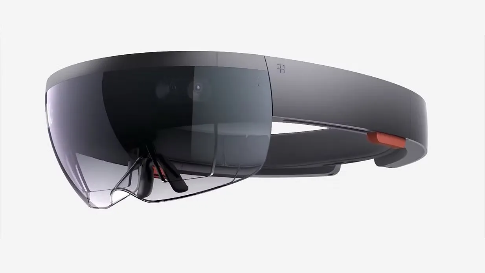
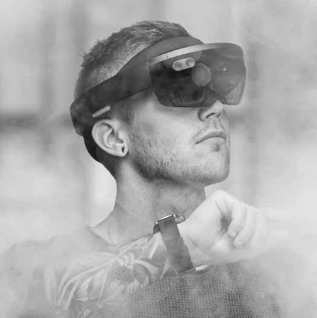
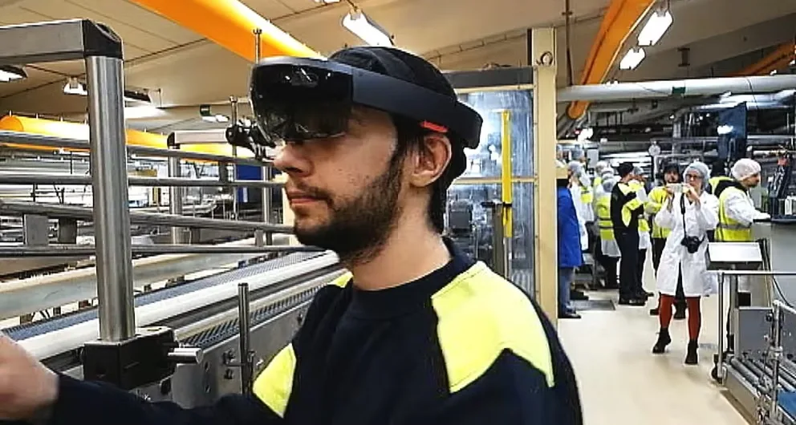

While I was working at Nethouse, we were approached by Kopparbergs Brewery & Örebro University to do a proof of concept.
Kopparbergs needed a solution to help train their summer employees on setting up the machines in the brewery for different drinks, bottles and can sizes, both faster and with less failure rates. We utilised Microsofts HoloLens to demonstrate how augmented reality could be applied to help them solve this problem.

My role in this project was to design the UI and interaction points for the solution. In addition to designing the user interface, I also tested the product.
The HoloLens was entirely new to me and having never used one before, both designing and testing this solution meant new exciting challenges, lessons learned and a large amount of personal development.

This project was initialised as a proof of concept and co-financed with Örebro University. It had a small budget cap and a very limited timeframe to be completed. We set out to do the most of what we could with the time given to us.
Just like any other project we started by meeting the customer. We traveled to the Brewery to meet directly with the brewing master and employees and to get a tour of the brewery to gain deeper insights. During the visit we did research by asking questions, observed and took notes about the environment, technical and human challenges, their workflow, what their day-to-day looked like and what problems they experienced.
Back at the office I started analysing the data that we gathered. The product needed to seamlessly integrate a user interface with real-world environments and assist with complex machine setups. I started using user journeys to map out each flow, I drew inspiration from video games, sci-fi movies, and of course Microsoft demo videos about the HoloLens capabilities. These elements helped me iterate towards the final solution.
The solution began with the user putting on the HoloLens headset and launching a native-built application. The app consisted of a menu in the center of the field of view, allowing the user to select a brewing recipe. Once selected, the menu moved over to the left and a live arrow appeared at the top center of the field of view, guiding the user to the first step of the recipe (which where a part of the machine). The arrow adjusted dynamically as the user moved just like in a video game.
On the left side of the field of view the recipe steps were always visible, providing instructions such as: “Set X to 5.5mm” or “Attach THIS to Y”. After completing a step the user marked it as done. The interface then updated the progress, displayed the next step, and redirected the arrow to guide the user to the following task.
The solution allowed for a clear and intuitive process, ensuring users could follow each step accurately and efficiently. The project reduced training time for new employees, improved the quality of machine setups and minimised the risk of human error.
